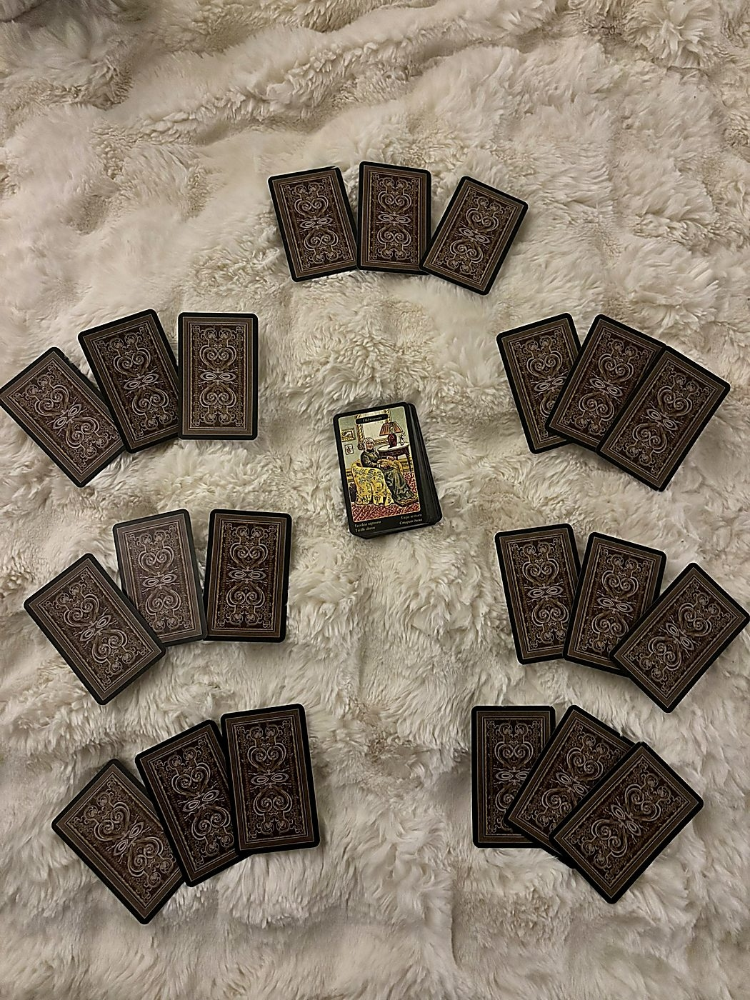

Week Ahead · Sibilla della Zingara
april 6–12, 2026 · your first sibilla reading · 21 cards across 7 positions

A Quick Word Before We Begin
Okay, Naomi. This is your first time with the Sibilla della Zingara, the Gypsy Oracle, and I want you to know what you're looking at. This is a 52-card Italian storytelling deck. It's blunter than Lenormand, nosier than Kipper. It names people, it names feelings, it does not mince words. Each position has three cards, and I read them as a little scene: the surface story left to right, then the outer two framing the center card as the crux, then cause-and-effect pairs. Person cards are real people. The deck will point at someone and say that one, and it's your job to recognize the face. I'll describe the archetype, you place the name.
This week's pull is genuinely interesting. There's a lot going on, so let's get into it.
The Weight You're Already Carrying
Sighs · Misfortune · Service
Left to right, the surface story: there's a longing that hasn't been met, something you've been quietly wanting or grieving, and that longing runs into a genuine loss or setback, which lands in a space of duty, of showing up for others even when it costs you.
The outer pair framing the center: Sighs and Service wrap around Misfortune as the crux. This means the central energy of your week's theme is actual difficulty, real bad luck or loss, and it's being held between quiet grief on one side and obligation on the other. You're sighing your way through something hard while still doing the work.
Cause and effect: Sighs leads to Misfortune, which tells me the longing itself may have created the conditions for the loss, or at least they're deeply linked. Then Misfortune leads to Service, meaning the response to whatever goes wrong is to put your head down and take care of business.
The theme this week is carrying something heavy while still showing up. The longing and the loss are connected, and your default mode is to serve through it rather than stop.
Lightness That's Actually Lucky
Frivolity · Joyfulness · Surprise
Now here's the good news, and it's genuinely good. Joyfulness at center, Allegrezza al cuore, joy to the heart, the intimate, personal kind of happiness. Not a party, not a performance. Something that actually touches you inside.
But Frivolity opens this group, and you should know: Frivolity has a special property in the Sibilla. It diminishes the intensity of what surrounds it. So even though Joyfulness and Surprise are both beautiful cards, this week's positive energy comes in lighter, more fleeting, more impulsive than it might otherwise. Think of it as a really good moment that passes quickly rather than a sustained wave of support. A flash of something wonderful.
The outer pair: Frivolity and Surprise frame Joyfulness. The support this week comes through something you weren't taking seriously, or through a careless, spontaneous moment that unexpectedly lands right in your heart. You stumble into joy by not trying.
Cause and effect: Frivolity leads to Joyfulness, so letting yourself be a little reckless or light about something actually opens the door to genuine happiness. Then Joyfulness leads to Surprise, meaning that heartfelt moment turns into something unexpectedly good arriving.
Don't grip this week. The good stuff comes through the moments you let yourself be silly, unguarded, or impulsive. It won't last forever, but it doesn't need to. Let the flash be enough.
Envy at the Party, Stagnation at the Bank
Pleasure-Seekers (R) · Death · Money (R)
The friction is sharper than it looks. Left to right: Pleasure-Seekers reversed — and reversed here means the social scene isn't what it's presenting itself as. This isn't genuine fun or excitement. This is someone performing enthusiasm, envy driving the invitation, a conspiracy running behind the festive surface. Something that looks like a good time has an agenda. Then Death, the transformation card, a necessary ending, something fundamental shifting. Then Money reversed — and reversed Money in the Sibilla is not a sudden financial hit. It's a freeze. Blocked resources. A payment that stalls. The kind of financial situation that just sits there and doesn't move.
The outer pair: Pleasure-Seekers reversed and Money reversed wrap around Death at the center. The thing dying between them is something that was already compromised. A social dynamic or arrangement that was never as solid as it looked is ending, and on the other side is not a crash but a stagnation. The money doesn't flow. Plans don't move forward. Something gets stuck.
Cause and effect: The reversed social energy — the envy, the surface performance, the conspiracy behind the festivity — triggers the ending. Then Death leads to Money reversed, meaning the transformation reveals not a dramatic consequence but a frozen one. Resources blocked. Movement stalled.
This is more unsettling than a crash in some ways. It's not loud. It's just not moving.
The social scene this week has something running underneath it. And when the ending comes, what's left isn't a crisis — it's a freeze. The money stops moving. Don't confuse stillness for safety.
What Was Never Faithful to Begin With
Faithfulness (R) · Foe · Doctor
Left to right: Faithfulness reversed — and this is where the reading shifts significantly. Faithfulness reversed in the Sibilla is not loyalty that gets betrayed. It is a broken promise, infidelity in the broad sense, skeletons in the closet. Whatever bond this outer card is naming was already compromised before this week. Then Foe, a female adversary acting with intent. Then Doctor, a professional authority figure who diagnoses clearly and knows what needs to happen.
The outer pair: Faithfulness reversed and Doctor frame Foe at center. The surprise this week isn't a loyal person suddenly revealing themselves as an adversary. It's the confirmation of something that was already quietly wrong. The bond was already cracked. The Foe in the middle is less a shock and more a clarity — the mask slips not because she got careless, but because the structure it was hiding behind was already unstable.
Cause and effect: Faithfulness reversed leads to Foe, meaning the already-broken promise, the already-compromised loyalty, is what reveals this woman fully. Then Foe leads to Doctor, meaning that revelation — uncomfortable as it is — leads you directly to someone with actual expertise to help you deal with what it means. A therapist, a professional, a consultant, a healer. Someone whose job is to see what's actually wrong and name it clearly.
The surprise, Naomi, is that it was already broken and this week you find out. That's actually clarifying, even when it stings.
The bond in this position wasn't faithful to begin with. What surprises you this week is the confirmation — and then immediately, someone competent shows up to help you deal with what that means.
What He's Thinking and What You Deserve
Gift · Thought · Lover
Three cards, and the lesson lives in the tension between them. Gift, something genuinely good arriving unexpectedly, then Thought, ideas and doubts circling, plans being quietly formed, and Lover, a romantically significant man in your life, unmarried, roughly 30 to 45, warm and present when he's upright.
Important Sibilla rule: Thought doesn't automatically mean your thoughts. It represents whatever ideas, doubts, or plans are circling the situation, and they could belong to anyone nearby.
The outer pair: Gift and Lover frame Thought at center. The challenge this week is thinking, specifically the mental spinning between something good that's available to you and a man who matters to you romantically. The gift is there. The person is there. But the thoughts, the doubts, the circular planning, are the obstacle.
Cause and effect: Gift leads to Thought, meaning something good arriving triggers a spiral of analysis or doubt. Then Thought leads to Lover, meaning those circling ideas eventually point toward or involve this man.
The lesson: you're being asked to sit with the discomfort of something good being offered while your mind tries to talk you out of it or complicate it. Whether it's his thoughts or yours, the challenge is that the mental noise is standing between a genuine gift and a genuine connection.
Something good is trying to reach you and a man who matters. The only thing in the way is overthinking. The lesson is to receive before you analyze.
Know Your Battlefield, Know Your People
Merchant · Enemy · Soldier
Three person cards in the advice position. The Sibilla is literally pointing at people and saying these are the dynamics you need to navigate this week.
Merchant: a man in a business role, practical dealings, career and financial matters. Enemy: a male adversary, acting directly or indirectly, representing falsehood and obstacles. Note: Enemy is male, distinct from the Foe in your surprise position who is female. Different person. Soldier: discipline, strength, uphill battles requiring force, possibly someone in a uniform or authority role.
The outer pair: Merchant and Soldier frame Enemy at center. The advice is to handle a male adversary using both the Merchant's practical, transactional clarity and the Soldier's disciplined strength. Don't go at this person emotionally. Go at him like a business deal backed by force.
Cause and effect: Merchant leads to Enemy, meaning a professional or financial interaction is where this adversary operates or reveals himself. Then Enemy leads to Soldier, meaning dealing with him requires the Soldier's energy, standing your ground, meeting the uphill battle directly, and not flinching.
This is the deck telling you: be strategic in professional spaces this week. There is a man who is not acting in your interest, and the way through is to combine the Merchant's savvy with the Soldier's backbone. Don't try to charm or negotiate feelings. Be the person who knows her numbers and isn't afraid to hold the line.
The advice is steel in a business suit. A male adversary operates in professional territory this week. Meet him with financial clarity and disciplined force. No feelings at the negotiating table.
The Conversation That Won't Come Easy
Conversation (R) · Despair · Wedding
How the week lands. Left to right: Conversation reversed — blocked communication, delayed exchange, things being withheld or not said directly. Someone is pulling back from the dialogue. Words aren't landing the way they should. The emotional withdrawal that Conversation reversed describes isn't silence exactly — it's the feeling of the surface thing being said while the real thing stays held back. Then Despair, and Naomi, the Sibilla's full name for this card is Disparato per gelosia, desperate due to jealousy. Not general sadness. Wounded-ego energy, the feeling of being overlooked or outpaced, jealousy acting out. Then Wedding — union, commitment, a formal agreement or contract.
The outer pair: Conversation reversed and Wedding frame Despair at center. The week resolves through a commitment being addressed — but the conversation that gets you there is not a clean or open one. Someone is withholding. The dialogue is stilted or avoidant. And inside that blocked exchange is jealousy: wounded pride, someone who feels overlooked.
Cause and effect: Conversation reversed leads to Despair, meaning the blocked or guarded communication is what lets the jealousy fester. When things don't get said directly, the wounded ego fills in the gaps. Then Despair leads to Wedding — and this is the Sibilla being honest with you. The jealousy-driven crisis, even in the context of difficult communication, is what finally forces a commitment to be addressed. Something gets formalized whether the talking is clean or not.
The week ends somewhere real. Just not easily. Wedding carries the most weight as the last card — and it lands regardless.
The conversation this week doesn't come easy — someone's holding back, things aren't being said directly. But behind the blocked dialogue is jealousy, and behind the jealousy is a commitment finally getting addressed. Messy path, real landing.
The Old Woman Beneath Everything
Old Woman — upright.
The hidden driver beneath the entire week. Old Woman is an established older female figure, sixty or older, someone with deep roots. She represents long-standing situations and things that resist change. This card doesn't just name a person; it names an energy. Something old, something rooted, something that has been this way for a long time is the engine under all of this week's events.
She could be a literal older woman in your life, a matriarch, a grandmother figure, someone whose influence shapes the family or the household in ways so foundational you almost forget she's doing it. Or she could be the weight of an old pattern, a long-established dynamic that has been running the show while you dealt with the surface.
Upright, she's not malicious. She's just established. Immovable. The kind of influence that doesn't ask permission because it's been there longer than you have.
Beneath every card this week, an older woman or an old, deeply rooted situation is quietly running things. She doesn't need to announce herself. She's been here the whole time.
Synthesis · The Whole Picture
sibilla + citadel oracle · weaving the week together
The Two Energies Framing Your Week
Energy to Cultivate: The Painter ↓ (reversed)
A splash of colour, the bright powder-pigment of paint boxes, the sharp scent of chemicals — the Painter sets to work on the Citadel’s vivid mural to adorn it. One street is a blank canvas, waiting for something to adorn it. The Painter’s drive to create is all-consuming; they have forgotten the murals that have come before, already focused on their next new creation.
▽ Reversed: Doubt in your skills is stopping you from reaching your true potential and manifesting your plans. Whatever it is you are telling yourself — that you do not have the talent to achieve right now — stop and think: what are the risks of just going for it? Are your fears truly grounded in reality, or are you creating your own roadblocks?
— The Citadel Oracle Guidebook
The Painter reversed is perfectionism blocking creation. Upright, the Painter makes the inner world real, translates vision into form. Reversed, you're so worried about getting it exactly right that you don't make anything at all. The Citadel says: cultivate this energy, even in its shadow form. That's counterintuitive, right? It means this week you need to make something imperfect. Put it down. Let it be rough. The shadow of the Painter isn't the enemy here, it's the growth edge. You're being asked to create, decide, act, even when you know the result won't be flawless.
Understand / Manage: The Storyteller ↓ (reversed)
Children gather on the far side of the square, their attention glued to a wooden box, a white sheet, and a lantern. Behind it, hidden hands transform into beasts and people made of shadows, telling stories both old and new that have the children laughing and cheering equally. The Storyteller is the conjurer of this show — in control of every character and every line.
▽ Reversed: There is another Storyteller in your life, and one who is telling a tale with more embellishments than there should be. They may be trying to mislead or manipulate you. Do not be fooled by their showmanship; not everyone has your best interests at heart.
— The Citadel Oracle Guidebook
The shadow you’re managing this week isn’t yours — it belongs to someone else. The Storyteller reversed names a specific person: someone performing a version of events that has been edited in their favour. Given what the Sibilla already showed (a bond that was never faithful, a female adversary confirmed), this card is the Citadel’s confirmation. Someone in your life is running a narrative that does not match reality. Don’t let the showmanship distract you from what the Sibilla already named clearly.
Make it messy and make it real. Stop narrating your own life and start living the scene you're in.
The Week Where the Story Breaks and the Contract Gets Rewritten
Here's the through-line, Naomi.
You walk into this week carrying something heavy. Sighs, Misfortune, Service: a longing that met a loss, and your instinct is to serve through it, to keep showing up for everyone else while you're quietly aching. The Old Woman at the bottom of the deck says this weight isn't new. It's old. It's rooted. It may trace back to an actual older woman in your life or to a dynamic so long-standing it feels like geography rather than choice.
The friction comes through the social and financial sphere — but it's not what it looks like on the surface. Pleasure-Seekers reversed into Death into Money reversed: the social scene this week has something running underneath it. Envy. A performance of enthusiasm that isn't genuine. Something that looks festive has an agenda. That tainted energy triggers an ending, and what's left on the other side isn't a dramatic financial crash — it's a freeze. Resources stall. A payment doesn't move. Plans sit. And in the advice position, the Sibilla gives you Merchant, Enemy, and Soldier — three men in a row — and says: there's a male adversary operating in the professional or financial space, and you handle him with the Merchant's pragmatism and the Soldier's discipline. Not emotional negotiation. Numbers and backbone.
In the surprise position, the reading gets sharper. Faithfulness reversed frames Foe at center — and reversed Faithfulness isn't loyalty that gets betrayed. It's a bond that was already broken before this week. The Foe showing up isn't a shock so much as a confirmation. Something you maybe already quietly sensed was off turns out to have been off. And the grace is that it leads you to Doctor — someone competent, someone who can actually diagnose what was never healthy to begin with. The Sibilla is naming two separate adversaries this week: a male one operating in professional territory, and a female one in a space that was presenting itself as loyal. Two different people. Two different spheres.
In the challenge position, Gift and Lover are both present, both good, both available, and the only thing between them is Thought — circling ideas, doubts, plans that haven't landed. The Painter reversed names what's happening internally: perfectionism or self-doubt is stopping you from reaching toward what's already here, something good and someone who matters, because you're not sure you'll get it right. That part is yours to work through. But the Storyteller reversed is a different signal entirely — that's not your own overthinking, it's someone else's narrative running in the background. Someone has been shaping the story around this situation, and their version has been edited in their favour. Some of the doubt feeding your Thought spiral may not even originate with you. It may have been handed to you by someone with an interest in keeping the gift and the connection just out of reach.
And the week resolves — but not cleanly. Conversation reversed into Despair into Wedding: the dialogue that needs to happen this week is blocked or guarded. Someone is withholding. Things are being said at the surface while the real thing stays held back. That avoidance lets the jealousy — the wounded-ego energy at the center — fester. But here's what the Sibilla is telling you: even through blocked communication, even with the messy jealousy-driven crisis in the middle, Wedding is the last card. Something gets formalized. A commitment gets addressed. The week lands somewhere real whether the conversation is clean or not.
The Old Woman beneath everything is the reminder: this isn't new. Whatever gets confirmed, renegotiated, or finally spoken aloud this week has been building for a long time. The roots go deep. You're not reacting to something new. You're finally dealing with something old.
The positive influence — Frivolity softening Joyfulness and Surprise — is your relief valve. Let one thing be light and impulsive and easy this week without making it mean something. That flash of joy is the breath between everything else.
Envy in the social scene. A financial freeze. A bond that was already cracked before the Foe confirmed it. A gift and a man waiting behind your overthinking. A conversation that won't come easy but still lands in commitment. And beneath all of it, something very old finally being dealt with. Make the imperfect move, Naomi. Stop writing the story and step into the scene.